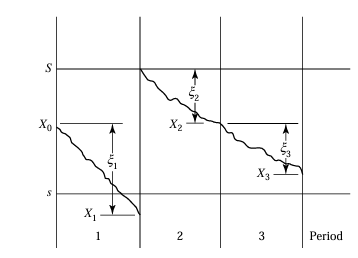

Study notes and chapter summaries
A Markov process \(X_t\) is a stochastic process with the property that, given the value of \(X_t\), the values of \(X_s\) for s>t are not influenced by the values of \(X_u\) for \(t> u\).
A discrete-time Markov chain is a Markov process whose state space is a finite or countable set, and whose (time) index set is T =\( (0,1,2 \ldots ) \). Mathematically: $$ P(X_{n+1} = j| X_0 = i_0, \ldots , X_{n-1} = i_{n-1}, X_n= i) $$ $$ = P( X_{n+1} =j | X_n= i) $$ for all n and all states \( i_0 , \ldots, i_{n-1}, i, j \)
In a Markov chain, we usually label the state space using non-negative integers: 0, 1, 2, .... Unless stated otherwise, we follow this convention.
If the chain is in a certain state at time \( n \), we say \( X_n = i \). The probability that it moves to state \( j \) at the next time step \( n+1 \), given that it is currently in state \( i \), is called the one-step transition probability. It is denoted by:
\[ P^{(n,n+1)}_{ij} = \Pr(X_{n+1} = j \mid X_n = i) \]This notation indicates that the transition probabilities can depend on the current time \( n \), as well as the current and next states \( i \) and \( j \).
If these probabilities are independent of time, we say that the Markov chain has stationary transition probabilities. In that case, we write:
\[ P_{ij} = \Pr(X_{n+1} = j \mid X_n = i) \]This means the probability of transitioning from state \( i \) to state \( j \) remains the same at every step.
These probabilities \( P_{ij} \) are usually arranged in a transition matrix \( P \) as follows:
\[ P = \begin{bmatrix} P_{00} & P_{01} & P_{02} & \cdots \\ P_{10} & P_{11} & P_{12} & \cdots \\ P_{20} & P_{21} & P_{22} & \cdots \\ \vdots & \vdots & \vdots & \ddots \\ \end{bmatrix} \]Each row corresponds to the current state \( i \), and each column represents the probability of transitioning to state \( j \).
In a Markov chain, we represent the one-step transition probabilities using a matrix \( P \), called the Markov matrix or transition probability matrix. Each entry \( P_{ij} \) in this matrix represents the probability of moving from state \( i \) to state \( j \) in one step.
That is, \[ P_{ij} = \Pr(X_{n+1} = j \mid X_n = i) \]
The \( i \)th row of \( P \) gives the full probability distribution of the next state \( X_{n+1} \) given that the current state \( X_n = i \). In other words, the \( i \)th row shows where the process might go from state \( i \), and with what probabilities.
If the number of states is finite (say, \( 0, 1, \ldots, r \)), then \( P \) is a finite square matrix of order \( r + 1 \), meaning it has \( r+1 \) rows and \( r+1 \) columns.
The entries of the transition matrix must satisfy two conditions:
The second condition simply reflects the fact that some transition must occur at each step. Even if the state doesn't change (i.e., it stays in the same state), we still consider that a transition has occurred.
Let P{ \( X_0 = i \)} = \(p_{i_0}\). It's enough to show how to compute the probability P{ \( X_0 = i_0, X_1 =i_1, \ldots , X_n= i_n \) }, since any probability containing \(X_{j_1}, X_{j_2}, \ldots, X_{j_k} , j_k> \ldots >j_2 >j_1 \) can be obtained by summing terms of the above form (by Theorem of Total Probability).
P{ \( X_0 = i_0, X_1 =i_1, \ldots , X_n= i_n \) }
=P{ \( X_0 = i_0, X_1 =i_1, \ldots , X_{n-1}= i_{n-1} \) } P{ \(X_n = i_n | X_0 = i_0, X_1 =i_1, \ldots , X_{n-1}= i_{n-1} \) }
=P{ \( X_0 = i_0, X_1 =i_1, \ldots , X_{n-1}= i_{n-1} \) } P{ \(X_n = i_n | X_{n-1}=i_{n-1} \) }
=P{ \( X_0 = i_0, X_1 =i_1, \ldots , X_{n-1}= i_{n-1} \) } \(P_{i_{n-1}i_n}\)
Similarly, P{ \( X_0 = i_0, X_1 =i_1, \ldots , X_n= i_{n-1} \) }
=P{ \( X_0 = i_0, X_1 =i_1, \ldots , X_{n-2}= i_{n-2} \) } \(P_{i_{n-2}i_{n-1}}\)
Therefore, the original expression simplifies to:
\( P\left( X_0 = i_0, X_1 = i_1, \ldots , X_n = i_n \right) = p_{i_0} \cdot P_{i_0 i_1} \cdot P_{i_1 i_2} \cdot \ldots \cdot P_{i_{n-1} i_n} \)
A Markov chain is fully defined by two things:
Most of the analysis of Markov chains revolves around calculating the probabilities of different outcomes after several steps or time periods. For this, we use the n-step transition probability matrix, denoted by \( P^{(n)} \).
The element \( P^{(n)}_{ij} \) represents the probability that the process moves from state \( i \) to state \( j \) in exactly \( n \) steps. Formally:
\( P^{(n)}_{ij} = \Pr(X_{m+n} = j \mid X_m = i) \)
Since we are considering stationary (time-homogeneous) Markov chains, the probability depends only on the number of steps \( n \), and not on the starting time \( m \).
Thanks to the Markov property (which says that the future depends only on the present state, not the past), we can compute \( P^{(n)} \) recursively:
\( P^{(n)}_{ij} = \sum_{k=0}^{\infty} P_{ik} \cdot P^{(n-1)}_{kj} \)
This recursive formula is just standard matrix multiplication, so we can write:
\( P^{(n)} = P \cdot P^{(n-1)} \)
By repeatedly applying this formula (i.e., multiplying the matrix \( P \) with itself \( n \) times), we get:
\( P^{(n)} = P^n \)
That is, the n-step transition probabilities are exactly the entries of the matrix \( P \) raised to the \( n \)-th power.
To complete the definition, we also define:
This just means that in zero steps, the process stays where it is.
We want to prove the formula:
\( P^{(n)}_{ij} = \sum_{k} P_{ik} \cdot P^{(n-1)}_{kj} \)
This formula means: the probability of going from state \( i \) to state \( j \) in \( n \) steps is the sum over all intermediate states \( k \) of the probability of:
To see why this works, let’s look at what it means to reach \( j \) from \( i \) in exactly \( n \) steps.
We imagine that the first step takes the process from state \( i \) to some state \( k \). Then the remaining \( n - 1 \) steps must take the process from \( k \) to \( j \).
Now, because of the Markov property, once the process reaches \( k \), it "forgets" how it got there. So the probability of continuing from \( k \) to \( j \) depends only on \( k \), and not on any earlier states.
So, for each possible intermediate state \( k \), the probability of going from \( i \rightarrow k \rightarrow j \) in total \( n \) steps is:
\( \Pr(X_1 = k \mid X_0 = i) \cdot \Pr(X_n = j \mid X_1 = k) = P_{ik} \cdot P^{(n-1)}_{kj} \)
To find the total probability of reaching \( j \) from \( i \) in \( n \) steps, we sum this product over all possible intermediate states \( k \):
\( P^{(n)}_{ij} = \sum_{k} P_{ik} \cdot P^{(n-1)}_{kj} \)
This is exactly how matrix multiplication works, so we can write the matrix formula:
\( P^{(n)} = P \cdot P^{(n-1)} \)
By repeating this step, we get:
\( P^{(n)} = P^n \)
This completes the proof. It uses the basic idea that the path from \( i \) to \( j \) in \( n \) steps must go through some state \( k \) after the first step, and the rest follows by the Markov property and total probability.
This model describes a scenario where a commodity is stocked to meet a random demand over time. Time is divided into periods (n = 0, 1, 2, ...), and stock is reviewed at the end of each period.
The demand in each period, denoted by \( \xi_n \), is a random variable with the same probability distribution across time:
The stock is restocked based on the following policy:
The state of the process is \( X_n \), the stock level at the end of period \( n \), before restocking. It evolves as a Markov chain based on the random demand and the restocking rule.
The transition rule is:
This rule, together with the demand probabilities, determines the transition probability matrix.
Suppose:
Possible stock levels: 2, 1, 0, -1 (unfilled demand is treated as negative stock).
From this setup, we compute the transition probabilities. For instance:
Transition Matrix:
| -1 0 1 2
------------------------
-1 | 0 0.1 0.4 0.5
0 | 0 0.1 0.4 0.5
1 | 0.1 0.4 0.5 0
2 | 0 0.1 0.4 0.5
Below is the illustration of how the process evolves over time:
The Ehrenfest urn model is a classical representation of diffusion, simulating how molecules move across a membrane.
Imagine you have two containers (urns), A and B, that together contain a total of 2a balls. Initially, urn A holds k balls and urn B has 2a - k balls.
At each time step, one of the 2a balls is selected at random, and then moved to the other urn. This random movement simulates the diffusion of molecules.
Let Yn be the number of balls in urn A after the nth step, and define a centered variable:
Xn = Yn - a
Then Xn becomes a Markov chain with state space:
{ -a, -a+1, ..., 0, ..., a-1, a }
The transition probabilities are defined as follows:
This transition rule reflects that if urn A has more balls (i is positive), then it's more likely to lose a ball, and vice versa. Thus, there is a tendency or "drift" toward balancing the urns.
An important focus of this model is finding the equilibrium distribution — the long-run behavior of the number of balls in urn A. Over time, the system stabilizes such that the probability distribution over states no longer changes.
The model is symmetric and reversible, so the equilibrium distribution exists and reflects the binomial distribution of balls across urn A and B, due to random uniform selection.
This model investigates how gene frequencies fluctuate across generations. We assume:
So, the number of a-genes in the next generation follows a Binomial(2N, pj) distribution.
We define a Markov chain Xn to be the number of a-genes in generation n. The state space is {0, 1, ..., 2N}.
The transition probability from state j to state k is:
Pjk = C(2N, k) * (pj)k * (qj)2N−k
where C(2N, k) = 2N choose k.
Now suppose each gene may mutate before reproduction:
Let j be the number of a-genes initially. After mutation, the expected number of a-genes becomes:
Total expected number of a-genes after mutation = j(1 − μ) + (2N − j)ν
So, the probability that a randomly selected gene after mutation is an a-gene is:
pj = [j(1 − μ) + (2N − j)ν] / (2N)
And qj = 1 − pj
To model natural selection, we suppose that a-genes have a reproductive advantage.
If a-genes have a selective advantage s, then:
If there are j a-genes and (2N − j) A-genes, then total fitness = (1 + s)j + (2N − j)
So,
pj = [(1 + s)j] / [(1 + s)j + (2N − j)],
qj = 1 − pj
This is a model of a queueing system where:
A real-world example: A taxi stand where taxis arrive at fixed intervals. If no passengers are waiting, the taxi leaves immediately.
Let An be the number of new customers arriving in period n.
Define Xn as the number of customers in the queue at the start of period n.
During a period:
The number of customers at the start of next period is:
Xn+1 = max(0, Xn − 1) + An
This captures the logic: one customer leaves (if present), and An arrive.
Let’s denote the transition probability Pij = Pr(Xn+1 = j | Xn = i)
| From/To | 0 | 1 | 2 | 3 | 4 |
|---|---|---|---|---|---|
| 0 | a0 | a1 | a2 | a3 | a4 |
| 1 | 0 | a0 | a1 | a2 | a3 |
| 2 | 0 | 0 | a0 | a1 | a2 |
| 3 | 0 | 0 | 0 | a0 | a1 |
Let the expected number of new customers in a period be:
λ = Σ k * ak
The system is idle (no customer) only in state 0.
Fraction of time idle = π0
L = Σ (k * πk)
Let T be the expected time spent in system.
T = L / λ, where λ is the arrival rate
A surprising number of problems involving Markov chains can be solved using a technique called first step analysis. This technique works by analyzing what happens during the first step (or transition) of the Markov process and then using the law of total probability and the Markov property to build equations that involve unknown quantities of interest.
Consider a Markov chain with three states: 0, 1, and 2. The transition probability matrix is structured as follows:
Here, α + β + γ = 1, and α, β, γ are all greater than 0.
So, if the chain starts in state 1, it may stay there for a while but will eventually get absorbed into either state 0 or state 2.
There are two natural questions to ask:
To answer these questions, we use first step analysis.
Let T be the time (step number) when the process is absorbed (enters state 0 or 2 for the first time).
Let u be the probability that the process is eventually absorbed in state 0, given it starts in state 1:
u = P[X_T = 0 | X_0 = 1]
Let v be the expected number of steps until absorption, again given that the process starts in state 1:
v = E[T | X_0 = 1]
We break the analysis based on where the process goes in its first step from state 1:
So the probability of eventually reaching state 0 from state 1, denoted u, satisfies:
u = α × 1 + β × u + γ × 0
Simplifying:
u = α + βu
Solving for u:
u - βu = α → u(1 - β) = α → u = α / (1 - β)
This quantity represents the conditional probability of eventual absorption into state 0, assuming the process starts in state 1.
Now, we calculate v, the expected number of steps until absorption.
Again we break into cases:
So:
v = α × 1 + β × (1 + v) + γ × 1
v = (α + γ) × 1 + β(1 + v)
v = (1 - β) + β(1 + v)
Simplify:
v = 1 + βv → v(1 - β) = 1 → v = 1 / (1 - β)
The absorption time T, starting from state 1, actually follows a geometric distribution:
P[T > k | X_0 = 1] = β^k for k = 0, 1, 2, ...
This means:
E[T | X_0 = 1] = ∑ (from k = 0 to ∞) β^k = 1 / (1 - β)
This matches the result we obtained from first step analysis. In this simple case, the result can be verified directly, but for more complex Markov chains, first step analysis is often the only feasible method.
Now we consider a more complex situation: a four-state Markov chain with states 0, 1, 2, and 3. The transition matrix is given by:
The general form of the transition matrix is:
0 1 2 3
0 [ 1 0 0 0 ]
1 [P10 P11 P12 P13]
2 [P20 P21 P22 P23]
3 [ 0 0 0 1 ]
Because absorption occurs in state 0 or 3, and the initial state could be either 1 or 2 (both transient), the probability of absorption in state 0 depends on where the process starts. To address this, we define the following:
We also define for consistency:
Suppose the process starts in state 1. The first step could result in:
This leads to the equation:
u1 = P10 + P11 × u1 + P12 × u2 (Equation 3.21)
Similarly, for state 2:
u2 = P20 + P21 × u1 + P22 × u2 (Equation 3.22)
These two equations can be solved simultaneously to find the values of u1 and u2.
Consider the specific transition matrix:
0 1 2 3
0 [ 1 0 0 0 ]
1 [0.4 0.3 0.2 0.1]
2 [0.1 0.3 0.3 0.3]
3 [0 0 0 1 ]
Substituting into the equations for u1 and u2:
u1 = 0.4 + 0.3 × u1 + 0.2 × u2
u2 = 0.1 + 0.3 × u1 + 0.3 × u2
Solving the system:
0.7u1 + 0.2u2 = 0.4 0.3u1 + 0.7u2 = 0.1
The solution is:
So, starting from state 2, the probability that the process is eventually absorbed in state 0 is 19/43, and in state 3 is 24/43 (since the total must sum to 1).
We now use first step analysis to find the expected number of steps until absorption, starting from state 1 or 2.
If we start from state 1:
The equation becomes:
v1 = 1 + P11 × v1 + P12 × v2
Similarly, for state 2:
v2 = 1 + P21 × v1 + P22 × v2
Substituting the numerical values:
v1 = 1 + 0.3 × v1 + 0.2 × v2
v2 = 1 + 0.3 × v1 + 0.3 × v2
Solving these:
0.7v1 - 0.2v2 = 1 -0.3v1 + 0.7v2 = 1
The solutions are:
Therefore, if the process starts from state 2, it will take about 2.33 steps, on average, before it gets absorbed into either state 0 or 3.
Consider a finite-state Markov chain \( \{X_n\} \) with state space labeled \( 0, 1, \ldots, N \). Assume states \( 0, 1, \ldots, r-1 \) are transient, and states \( r, r+1, \ldots, N \) are absorbing.
The transition matrix \( P \) has the following block form:
\[ P = \begin{bmatrix} Q & R \\ 0 & I \end{bmatrix} \]Here, \( Q \) governs transitions among transient states, \( R \) represents transitions from transient to absorbing states, \( 0 \) is a zero matrix, and \( I \) is the identity matrix for absorbing states.
Let \( u_i^{(k)} = \mathbb{P}( \text{absorption in state } k \mid X_0 = i ) \), for \( i < r \), where \( k \geq r \) is a fixed absorbing state. A first-step analysis gives:
\[ u_i^{(k)} = P_{ik} + \sum_{j=0}^{r-1} P_{ij} u_j^{(k)} \]This yields a system of linear equations for \( u_0^{(k)}, u_1^{(k)}, \ldots, u_{r-1}^{(k)} \).
A rat moves randomly through a maze of 9 compartments. Compartments 7 (food) and 8 (shock) are absorbing. The transition probabilities are determined by uniform movement to adjacent compartments. Let \( u_i \) denote the probability that the rat reaches food (state 7) before shock (state 8), given that it starts at state \( i \).
Using first-step analysis, the equations are:
\[ \begin{aligned} u_0 &= \frac{1}{2}u_1 + \frac{1}{2}u_2 \\ u_1 &= \frac{1}{3}u_0 + \frac{1}{3}u_3 + \frac{1}{3} \\ u_2 &= \frac{1}{3}u_0 + \frac{1}{3}u_3 \\ u_3 &= \frac{1}{4}u_1 + \frac{1}{4}u_2 + \frac{1}{4}u_4 + \frac{1}{4}u_5 \\ u_4 &= \frac{1}{3}u_3 + \frac{1}{3}u_6 \\ u_5 &= \frac{1}{3}u_3 + \frac{1}{3}u_6 \\ u_6 &= \frac{1}{2}u_4 + \frac{1}{2}u_5 \\ u_7 &= 1 \\ u_8 &= 0 \end{aligned} \]By symmetry:
This simplifies the system to:
\[ \begin{aligned} u_0 &= \frac{1}{2}u_1 + \frac{1}{2}u_2 \\ u_1 &= \frac{1}{3}u_0 + \frac{1}{3} \cdot \frac{1}{2} + \frac{1}{3} \\ u_2 &= \frac{1}{3}u_0 + \frac{1}{3} \cdot \frac{1}{2} \end{aligned} \]Solving these gives:
Define the absorption time:
\[ T = \min \{ n \geq 0 \mid X_n \geq r \} \]Let each transient state \( i \) have an associated rate \( g(i) \). Define:
\[ w_i = \mathbb{E} \left[ \sum_{n=0}^{T-1} g(X_n) \mid X_0 = i \right] \]This satisfies the equation:
\[ w_i = g(i) + \sum_{j=0}^{r-1} P_{ij} w_j \]If \( g(i) = 1 \) for all \( i \), then:
\[ v_i = \mathbb{E}[T \mid X_0 = i] = 1 + \sum_{j=0}^{r-1} P_{ij} v_j \]If \( g(i) = \delta_{ik} \), then:
\[ W_{ik} = \mathbb{E}[\text{number of visits to } k \mid X_0 = i] = \delta_{ik} + \sum_{j=0}^{r-1} P_{ij} W_{jk} \]We introduce several particular Markov chains that arise in a variety of applications.
Let the transition matrix be given by:
\[ P = \begin{bmatrix} 1 - a & a \\ b & 1 - b \end{bmatrix} \quad \text{where } 0 < a, b < 1 \tag{3.30} \]When \( a = 1 - b \), so that the rows of \( P \) are the same, then the states \( X_1, X_2, \dots \) are independent identically distributed (i.i.d.) random variables with \( \Pr(X_n = 0) = b \) and \( \Pr(X_n = 1) = a \). When \( a \ne 1 - b \), the probability distribution for \( X_n \) depends on the outcome \( X_{n-1} \) at the previous stage.
For the two-state Markov chain, it can be verified by induction that the n-step transition matrix is given by:
\[ P^n = \frac{1}{a + b} \left( \begin{bmatrix} b & a \\ b & a \end{bmatrix} + (1 - a - b)^n \begin{bmatrix} a & -a \\ -b & b \end{bmatrix} \right) \tag{3.31} \]To verify this formula, define the matrices:
\[ A = \begin{bmatrix} b & a \\ b & a \end{bmatrix}, \quad B = \begin{bmatrix} a & -a \\ -b & b \end{bmatrix} \]Then equation (3.31) becomes:
\[ P^n = \frac{1}{a + b} \left( A + (1 - a - b)^n B \right) \]Now check the matrix multiplications:
\[ AP = \begin{bmatrix} b & a \\ b & a \end{bmatrix} \begin{bmatrix} 1 - a & a \\ b & 1 - b \end{bmatrix} = \begin{bmatrix} b & a \\ b & a \end{bmatrix} = A \] \[ BP = \begin{bmatrix} a & -a \\ -b & b \end{bmatrix} \begin{bmatrix} 1 - a & a \\ b & 1 - b \end{bmatrix} = (1 - a - b) B \]Hence, for \( n = 1 \), we have:
\[ P^1 = \frac{1}{a + b} \left( A + (1 - a - b) B \right) = P \]To complete the induction, assume the formula holds for \( n \). Then:
\[ P^{n+1} = P^n P = \frac{1}{a + b} \left( A + (1 - a - b)^n B \right) P = \frac{1}{a + b} \left( A + (1 - a - b)^{n+1} B \right) \]This confirms the inductive step. Since \( 0 < a + b < 1 \), it follows that \( (1 - a - b)^n \to 0 \) as \( n \to \infty \), and thus:
\[ \lim_{n \to \infty} P^n = \frac{1}{a + b} \begin{bmatrix} b & a \\ b & a \end{bmatrix} \]Suppose the items produced by a certain worker are graded as defective or not. Due to trends in raw material quality, whether or not a particular item is defective depends in part on whether or not the previous item was defective. Let \( X_n \) denote the quality of the \( n \)th item, with \( X_n = 0 \) meaning "good" and \( X_n = 1 \) meaning "defective."
Suppose \( X_n \) evolves as a Markov chain whose transition matrix is:
\[ P = \begin{bmatrix} 0.99 & 0.01 \\ 0.12 & 0.88 \end{bmatrix} \]Defective items tend to appear in bunches in the output of such a system. In the long run, the probability that an item is defective is:
\[ \frac{a}{a + b} = \frac{0.01}{0.01 + 0.12} = 0.077 \]Let \( \xi \) be a discrete random variable taking nonnegative integer values with \( \Pr(\xi = i) = a_i \), for \( i = 0, 1, 2, \dots \), where \( \sum_i a_i = 1 \). Let \( \xi_1, \xi_2, \dots \) be independent copies of \( \xi \). We now define three different Markov chains associated with this sequence.
Define a process \( X_n = \xi_n \), with \( X_0 = 0 \). The transition matrix is:
\[ P = \begin{bmatrix} a_0 & a_1 & a_2 & \cdots \\ a_0 & a_1 & a_2 & \cdots \\ a_0 & a_1 & a_2 & \cdots \\ \vdots & \vdots & \vdots & \ddots \end{bmatrix} \tag{3.33} \]All rows are identical, expressing the fact that \( X_{n+1} \) is independent of \( X_n \).
Define \( X_n = \max(\xi_1, \xi_2, \dots, \xi_n) \), with \( X_0 = 0 \). This process is Markovian since:
\[ X_{n+1} = \max(X_n, \xi_{n+1}) \]Define \( A_k = a_0 + a_1 + \cdots + a_k \). Then the transition matrix is:
\[ P = \begin{bmatrix} A_0 & a_1 & a_2 & a_3 & \cdots \\ 0 & A_1 & a_2 & a_3 & \cdots \\ 0 & 0 & A_2 & a_3 & \cdots \\ 0 & 0 & 0 & A_3 & \cdots \\ \vdots & \vdots & \vdots & \vdots & \ddots \end{bmatrix} \tag{3.34} \]This model is useful, for example, in auction theory. If bids \( \xi_1, \xi_2, \dots \) are made on an asset, and the item is sold the first time the bid exceeds a threshold \( M \), then the time of sale is:
\[ T = \min\{n \geq 1 \mid X_n \geq M\} \]Using first-step analysis, the expected value of \( T \) is:
\[ \mathbb{E}[T] = \frac{1}{\Pr(\xi_1 \geq M)} = \frac{1}{a_M + a_{M+1} + \cdots} \tag{3.35} \]Define the cumulative sums \( S_n = \xi_1 + \cdots + \xi_n \), with \( S_0 = 0 \). Then the process \( X_n = S_n \) is a Markov chain because:
\[ \Pr(X_{n+1} = j \mid X_n = i) = \Pr(\xi_{n+1} = j - i) = a_{j - i}, \quad \text{for } j \geq i \]So the transition matrix has the form:
\[ P = \begin{bmatrix} a_0 & a_1 & a_2 & a_3 & \cdots \\ 0 & a_0 & a_1 & a_2 & \cdots \\ 0 & 0 & a_0 & a_1 & \cdots \\ 0 & 0 & 0 & a_0 & \cdots \\ \vdots & \vdots & \vdots & \vdots & \ddots \end{bmatrix} \tag{3.37} \]If \( \xi \) can take both positive and negative values, then \( S_n \) takes values over all integers, and the state space becomes \( \mathbb{Z} \). The transition matrix becomes symmetric:
\[ P = \begin{bmatrix} \cdots & a_2 & a_1 & a_0 & a_1 & a_2 & \cdots \\ \cdots & a_3 & a_2 & a_1 & a_0 & a_1 & \cdots \\ \cdots & a_4 & a_3 & a_2 & a_1 & a_0 & \cdots \\ \vdots & \vdots & \vdots & \vdots & \vdots & \vdots & \ddots \end{bmatrix} \]Here, \( \Pr(\xi = k) = a_k \), for \( k \in \mathbb{Z} \), and \( \sum_k a_k = 1 \). The symmetry of the transition matrix reflects the symmetry of the support of \( \xi \).
When discussing random walks, it is helpful to think of the system's state as the position of a moving "particle." A one-dimensional random walk is a Markov chain with a state space that is a finite or infinite subset of the integers. If the particle is in state \( i \), it can, in a single transition, either stay in \( i \) or move to one of the neighboring states \( i + 1 \) or \( i - 1 \).
If the state space is taken as the non-negative integers, the transition matrix has the form:
\[ P = \begin{array}{c|cccccc} & 0 & 1 & 2 & \cdots & i-1 & i+1 \\ \hline 0 & r_0 & p_0 & 0 & \cdots & 0 & 0 \\ 1 & q_1 & r_1 & p_1 & \cdots & 0 & 0 \\ 2 & 0 & q_2 & r_2 & \cdots & 0 & 0 \\ \vdots & \vdots & \vdots & \vdots & \ddots & \vdots & \vdots \\ i & 0 & 0 & 0 & \cdots & q_i & r_i & p_i \\ \end{array} \]Here, \( p_i > 0 \), \( q_i > 0 \), \( r_i \geq 0 \), and for \( i \geq 1 \), we have:
\[ q_i + r_i + p_i = 1 \]At the boundary state \( i = 0 \), assume:
\[ p_0 > 0, \quad r_0 \geq 0, \quad q_0 = 0, \quad \text{and} \quad r_0 + p_0 = 1 \]Specifically, if \( X_n = i \), then for \( i \geq 1 \):
\[ \begin{aligned} \Pr(X_{n+1} = i + 1 \mid X_n = i) &= p_i \\ \Pr(X_{n+1} = i - 1 \mid X_n = i) &= q_i \\ \Pr(X_{n+1} = i \mid X_n = i) &= r_i \end{aligned} \]Appropriate modifications are made for the boundary case \( i = 0 \). The term “random walk” is fitting, as a realization of the process resembles the path of a person (suitably intoxicated) moving randomly one step forward or backward.
The fortune of a player engaged in a sequence of contests can be modeled as a random walk process. Suppose a player \( A \), with current fortune \( k \), plays a game against an infinitely rich adversary. Let \( p_k \) be the probability of winning one unit and \( q_k = 1 - p_k \) the probability of losing one unit in the next contest. The process \( X_n \), representing the fortune after \( n \) games, is a Markov chain.
Once state 0 is reached (i.e., player \( A \) is wiped out), the process stays at 0. This event is known as gambler’s ruin.
Now suppose both players \( A \) and \( B \) have finite fortunes summing to \( N \), and player \( A \) starts with fortune \( k \). The state space is \( \{0, 1, 2, \dots, N\} \), where \( X_n \) is player \( A \)'s fortune at time \( n \), and \( N - X_n \) is player \( B \)'s.
If we allow the possibility of a draw, the transition matrix becomes:
\[ P = \begin{array}{c|cccccc} & 0 & 1 & 2 & \cdots & N-1 & N \\ \hline 0 & 1 & 0 & 0 & \cdots & 0 & 0 \\ 1 & q_1 & r_1 & p_1 & \cdots & 0 & 0 \\ 2 & 0 & q_2 & r_2 & p_2 & \cdots & 0 \\ \vdots & \vdots & \vdots & \vdots & \ddots & \vdots & \vdots \\ N-1 & 0 & 0 & \cdots & q_{N-1} & r_{N-1} & p_{N-1} \\ N & 0 & 0 & 0 & \cdots & 0 & 1 \\ \end{array} \tag{3.39} \]When player \( A \)'s fortune hits 0 (ruin) or \( N \) (opponent's ruin), the process stays in that state forever.
In the special case where the contest probabilities are identical at every stage, i.e., \( p_k = p \), \( q_k = q = 1 - p \), and \( r_k = 0 \), the transition matrix simplifies to:
\[ P = \begin{array}{c|cccccc} & 0 & 1 & 2 & \cdots & N-1 & N \\ \hline 0 & 1 & 0 & 0 & \cdots & 0 & 0 \\ 1 & q & 0 & p & \cdots & 0 & 0 \\ 2 & 0 & q & 0 & \cdots & 0 & 0 \\ \vdots & \vdots & \vdots & \ddots & \vdots & \vdots \\ N-1 & 0 & 0 & \cdots & 0 & q & p \\ N & 0 & 0 & 0 & \cdots & 0 & 1 \\ \end{array} \tag{3.40} \]Let \( u_i \) denote the probability that player \( A \) is ruined (i.e., reaches state 0 before \( N \)) starting from initial fortune \( i \). Then:
\[ u_i = p u_{i+1} + q u_{i-1}, \quad \text{for } i = 1, 2, \dots, N-1 \tag{3.41} \]with boundary conditions:
\[ u_0 = 1, \quad u_N = 0 \]Solving this recursion gives:
\[ u_i = \begin{cases} \frac{N - i}{N} & \text{if } p = q = \frac{1}{2} \\ \frac{(q/p)^i - (q/p)^N}{1-(q/p)^N} & \text{if } p \neq q \end{cases} \tag{3.42} \]These probabilities reflect the chances of gambler’s ruin based on initial fortune \( i \) and the fairness of the game. In a fair game, \( p = q \), the probability of ruin is \( u_i = 1 - \frac{i}{N} \). In a favorable game for player \( A \) (\( p > q \)), the ruin probability decreases exponentially with \( i \).
If player \( B \) is infinitely rich (i.e., \( N \to \infty \)), then:
\[ u_i = \begin{cases} 1 & \text{if } p \leq q \\ \left( \frac{q}{p} \right)^i & \text{if } p > q \end{cases} \]Hence, ruin is certain for player \( A \) if the game is fair or unfavorable. Only in a favorable game does player \( A \) have a chance to avoid ruin, and that chance increases with their initial fortune.
Consider a Markov chain on the non-negative integers with the following transition probability matrix:
\[ P = \begin{array}{c|ccccc} & 0 & 1 & 2 & 3 & \cdots \\ \hline 0 & p_0 & q_0 & 0 & 0 & \cdots \\ 1 & p_1 & r_1 & q_1 & 0 & \cdots \\ 2 & p_2 & 0 & r_2 & q_2 & \cdots \\ 3 & p_3 & 0 & 0 & r_3 & \cdots \\ \vdots & \vdots & \vdots & \vdots & \vdots & \ddots \\ \end{array} \tag{3.44} \]Here, \( p_i > 0 \), \( q_i > 0 \), and \( p_i + q_i + r_i = 1 \) for \( i = 0, 1, 2, \dots \). The state 0 is special: it can be reached from any state in one transition, while state \( i+1 \) can only be reached from state \( i \).
This structure frequently appears in applications and is especially useful for illustrating concepts due to its computational simplicity.
A notable application arises in the context of success runs in repeated trials where each trial results in either a success (\( S \)) or failure (\( F \)). Suppose each trial has probability \( \theta \) of success and \( 1 - \theta \) of failure. A success run of length \( r \) is said to occur at trial \( n \) if the outcomes in the previous \( r - 1 \) trials followed by the current one were \( FSS\ldots S \), with \( r \) successive successes preceded by a failure.
We define the current state of the process to be the length of the ongoing success run. If the latest trial results in a failure, the state resets to 0. If there are \( r \) consecutive successes preceded by a failure, the state is \( r \). Because the trials are independent, the resulting process is Markovian.
In this case, the transition probabilities take the special form:
\[ p_n = \theta, \quad q_n = 1 - \theta, \quad r_n = 0, \quad \text{for } n \geq 0 \]Thus, the transition matrix simplifies to a form that directly reflects transitions based on success/failure outcomes in independent trials, modeling success run lengths efficiently.
Last updated: June 5, 2025